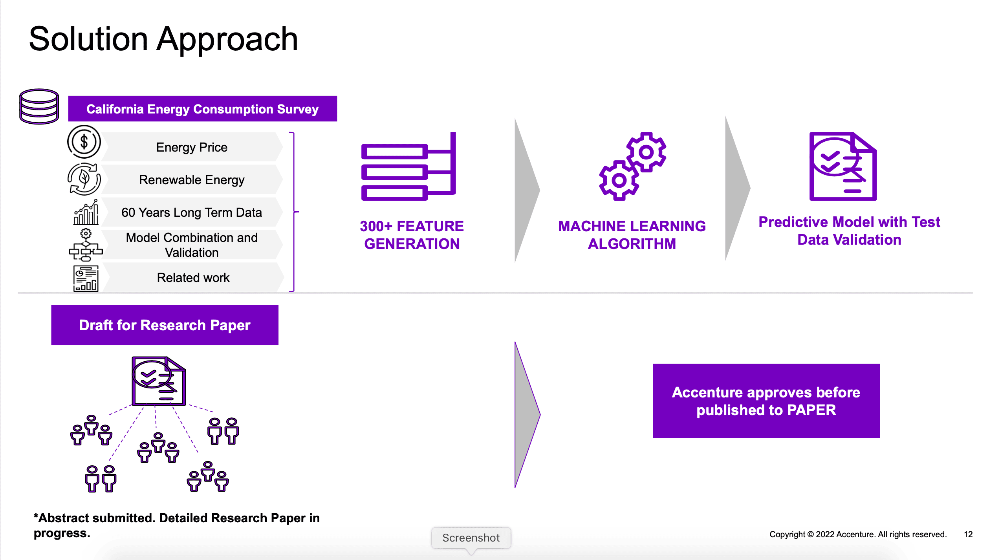

Work on Live Projects in ChatGPT Generative AIwith Uncodemy
At our Best ChatGPT Generative AI Training Institute in Bangalore, we prioritize practical experience as a key component of a comprehensive education. Our Generative AI Classes in Bangalore include live project opportunities, allowing students to apply classroom knowledge to real-world AI applications and gain hands-on experience.
Engaging in live AI projects enhances students' problem-solving skills, teamwork, and confidence. This practical experience can be highlighted in resumes and portfolios, making students more attractive to potential employers.

Work on Live Projects
Our training includes live project opportunities, allowing students to gain hands-on experience and apply their knowledge to real-world AI applications.
- AI-driven chatbot development
- Text generation and NLP-based applications
- Prompt engineering for business automation
- AI-powered content creation and sentiment analysis
We believe that providing hands-on, real-world experience through live projects better prepares students for successful careers in AI and Generative AI fields. If you seek practical experience and wish to enhance your Generative AI skills, we invite you to enroll in our ChatGPT Generative AI Training Course in Bangalore.
While hands-on projects are essential, they serve as a tool for skill enhancement rather than the sole indicator of success. These projects provide a basis for constructive feedback, helping participants refine their AI development skills and develop the resilience needed to overcome professional challenges.
Scholarships and Certifications in ChatGPT Generative AITraining Under Uncodemy
Uncodemy is committed to ensuring that financial constraints do not prevent students from accessing high-quality AI education and achieving their career goals. To support this, we offer scholarships to eligible students enrolling in our ChatGPT Generative AI certification course. These scholarships are designed to assist students who demonstrate both financial need and academic excellence.
Additionally, Uncodemy provides industry-recognized certifications in collaboration with renowned organizations such as NASSCOM, Skill India, and ISO. These certifications validate students' expertise in Generative AI, NLP, and AI-powered automation, enhancing their employability and helping them stand out in the competitive AI job market.
Scholarships & Certifications
Uncodemy offers scholarships to eligible students and industry-recognized certifications in collaboration with leading organizations.
- AI-powered chatbot development certification
- NLP and AI-powered automation
- Machine Learning & Deep Learning fundamentals
- Cloud-based AI model deployment
.png)
Students who complete our ChatGPT Generative AI training and earn these certifications will be well-prepared to pursue successful careers in AI, automation, and data-driven industries.
At Uncodemy, we are dedicated to making quality AI education accessible through scholarships and globally recognized certifications. This initiative enables us to help students achieve their professional aspirations in the growing field of Generative AI.
Most Frequently Asked Questions (FAQs)
1. Which Institute is Best for Generative AI Training in Bangalore?
+If you’re looking for the best ChatGPT Generative AI training in Bangalore, Uncodemyis a top choice. The institute offers expert-led classes, hands-on projects, and one-on-one mentoring to help you master AI tools. With flexible learning options and strong placement support, Uncodemy ensures you gain real-world AI skills to build a successful career in this field.
2. What Are the Job Trends for Generative AI Professionals in Bangalore?
+AI is transforming industries, and the demand for Generative AI expertsis skyrocketing. Companies are hiring AI specialists for roles like Prompt Engineers, AI Content Creators, Chatbot Developers, and AI Consultants.With businesses integrating AI in content creation, automation, and customer support, job opportunities in this field are only growing.
3. How Long Does It Take to Complete the ChatGPT AI Course?
+The ChatGPT Generative AI course in Bangaloretakes around 2 monthsto complete. The duration depends on whether you choose online or offline learning. The course fee is reasonable, and given the in-demand skills you’ll acquire, it’s a great investment in your career.
4. What Career Opportunities Can I Explore After Completing the Generative AI Course?
+After completing this course, you can apply for roles such as:
- Prompt Engineer:Crafting and refining AI prompts to generate high-quality outputs.
- AI Content Creator:Using AI tools for writing, video scripting, and creative tasks.
- Chatbot Developer:Building and optimizing AI-powered chatbots for businesses.
- AI Consultant:Helping companies integrate AI solutions into their operations.
- Automation Specialist:Streamlining workflows using AI-driven automation tools.
5. What Skills Will I Gain from Uncodemy’s Generative AI Training?
+You’ll develop practical skills in:
- Prompt Engineering:Learning how to structure AI prompts for better responses.
- AI-Powered Content Creation:Generating articles, blogs, and marketing content.
- Chatbot Development:Building AI chatbots for customer support and automation.
- AI in Business Applications:Using AI tools for productivity and decision-making.
- Ethical AI Practices:Understanding responsible AI usage and bias mitigation.
6. What is an AI Certification, and How Does It Help My Career?
+An AI certificationvalidates your expertise in working with generative AI models. It helps you:
- Gain credibility in the AI and tech industry.
- Boost your chances of landing a high-paying AI-related job.
- Showcase your ability to use AI tools for automation, content generation, and problem-solving.
7. Is Generative AI in Demand in 2024-25?
+Absolutely! AI adoption is increasing across businesses, and Generative AIis one of the most in-demand skills. Companies are actively hiring AI professionals to enhance automation, improve content strategies, and develop AI-driven customer experiences. This makes 2024-25 an excellent time to enter the field.
8. Who is Eligible for the ChatGPT Generative AI Course?
+This course is open to everyone, including:
- Professionals who want to leverage AI for their careers(marketing, business, etc.).
- Students looking to build expertise in AI-driven automation and content generation.
- Anyone interested in learning how AI worksand how to use it effectively.
9. How Do I Start the Generative AI Course in Bangalore?
+It’s simple! Just follow these steps:
- Research and choose a reputed institute like Uncodemy.
- Enroll online or visit the institute to sign up.
- Pay the course fee and select between online or offline learning options.
10. What is the Syllabus of the Generative AI Course?
+The course covers:
- Introduction to Generative AI:Basics of AI models like ChatGPT and Gemini.
- Prompt Engineering:Structuring prompts for different AI applications.
- AI-Powered Content Creation:Using AI for blogs, social media, and business content.
- AI Chatbots:Developing chatbots for customer support and automation.
- AI Ethics and Bias Awareness:Understanding responsible AI usage.
11. What is the Best Course for Learning Generative AI?
+The best course combines both theory and practical experience. Uncodemy’s Generative AI training in Bangaloreis a great option because it provides hands-on learning, expert guidance, and real-world AI projects.
12. Is Coding Required to Enroll in This AI Course?
+No, coding is not requiredfor this course. While some advanced AI applications involve coding, this course focuses on using AI tools effectivelywithout needing programming experience. However, basic scripting knowledge can be an added advantage.
13. Is Generative AI Difficult to Learn?
+Not at all! While AI might seem complex at first, Uncodemy’s structured trainingmakes it easy to learn. With step-by-step guidance, real-world projects, and expert mentorship, you’ll quickly develop confidence in using AI tools.
14. Is Generative AI a High-Paying Career?
+Yes! AI professionals earn attractive salariesdue to the high demand for their skills. Salary packages vary based on experience and job role, but AI specialists often earn higher-than-average salariesin the tech industry.
15. Is a Career in Generative AI a Good Choice?
+Definitely! AI is shaping the future, and Generative AI expertsare among the most sought-after professionals today. With exciting job opportunities, high salary potential, and a rapidly growing industry, choosing Generative AI as a careeris a smart and future-proof decision.


.jpg)
.jpg)
.jpg)
.jpg)
.jpg)
.jpg)
.jpg)
.jpg)
.jpg)
.jpg)
.jpg)
.jpg)
.jpg)
.jpg)
.jpg)
.avif)
.jpg)
.jpg)
.jpg)
.jpg)
.jpg)
.jpg)
.jpg)
.jpg)
.jpg)
.jpg)
.jpg)
.jpg)
.jpg)
.jpg)
.jpg)